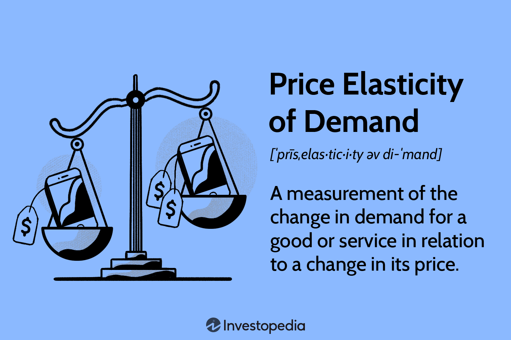

Exploring how large language models learn, connect, and take action through structured reasoning
Exploring how AI rewrites, retrieves, and reasons through prompts
Using three AI notebooks to understand how conversations, structure, and creativity evolve inside large language models
Experimenting with “Improv Games” and “Base vs Instruction Models” to See How AI Learns to Think and Respond
Why the neocortex is important
How does AI debate?
Exploring How AI Listens to Our Emotions
How do we implement curiosity?
Can you Jailbreak AI?
How do different prompts shape AI’s responses?
Analyzing how Trial and Error works for AI
Does AI show consistency in moral reasoning?
How does time play a role in decision making?
How how humans can learn through associations and why AI struggles.
What does AI think about AI?
Does GPT have morality?
The intelligence behind steering
What is common sense and is it uniquely to Humans or does AI have it too?
Can AI trace it’s own evolution and what does AI think about it’s intelligence?
Is Bennett’s proposition to study AI by studying evolution of the brain legitimate?

Does AI have some form of price elasticity understanding?
Can and will AI bargain goods?
Can AI serve as a realiable respondent for surveys for marketing decisions?